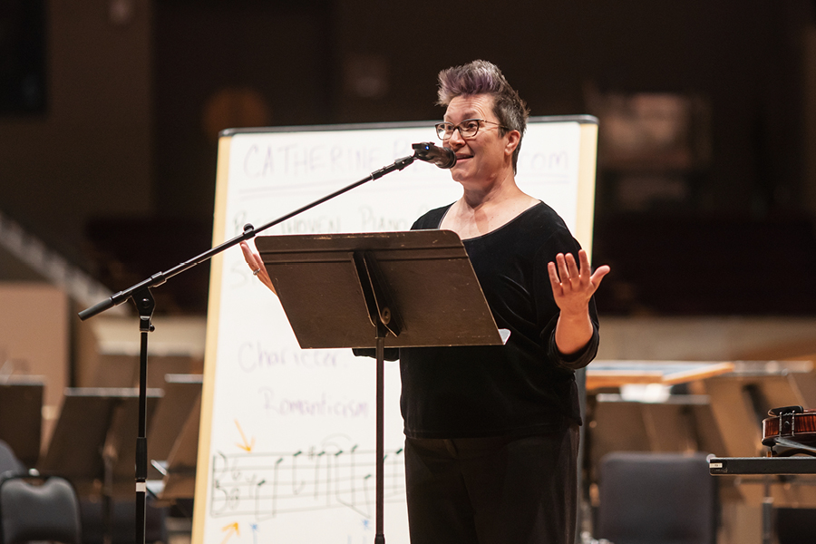

Ticketing
Can I exchange or refund my ticket purchase?
Refunds and Exchanges: All sales are final. No refunds. Verify all information (title, date, time, seat selection, etc.) before purchasing tickets. Please Note: All ticket exchange requests must be made at least 24 hours before your scheduled performance. Requests made inside of 24 hours before or anytime after your scheduled performance will not be eligible for on-account credit, exchange, or refund.
Subscribers may exchange tickets free of charge — one of the many subscriber benefits! Single-ticket holders may exchange for an additional fee ($5 per ticket). You may exchange tickets online, in person, or by phone for another performance within the same season, or receive on-account credit*. There is an additional cost if seating upgrades apply, and all exchange requests are subject to availability. You may also donate your tickets back to the Colorado Symphony and receive a donation receipt.
Note: All on-account credit from the 2024/25 Season must be used during the 2024/25 Season, ending with the season finale of Tchaikovsky Violin Concerto on May 30 – June 1, 2025. All unused on-account credit will be converted into a tax-deductible donation to the Colorado Symphony at the completion of the 2024/25 Season.

How do I use my on-account credit?
On-Account Credit: If you received on-account credit for a ticket return or exchange, you may use this credit through the conclusion of the concert season in which it was given. Credit from the 2024/25 Season may only be used for concerts at Boettcher Concert Hall through June 1, 2025. After this date, all unused on-account credit will be converted into a tax-deductible donation to the Colorado Symphony.
To use your credit towards a purchase, please contact the Box Office at (303) 623-7876. On-account credit cannot be used for online purchases.
How do I access my tickets online?
Colorado Symphony tickets are now available within the My Upcoming Events section of your Account at coloradosymphony.org. Step-by-step instructions on how to access these tickets are below.
How Much Do Colorado Symphony Tickets Cost?
Standard Ticketing

Prices vary based on the concert. The base ticket prices for most concerts are:
Family concerts are $10 for children and $27 for adults. Pricing for select Spotlight concerts is typically higher and varies by performance. Please note that service fees and seat tax apply to all ticket purchases.
Ticket prices may increase based on demand as the concert date approaches. By purchasing early, you will secure the best price and seat selection.
Discounted Ticketing

There are several ways to save money on ticket prices:
- Sign up for eNotes — the Colorado Symphony's weekly newsletter for first access to events, discounts, and promotions.
- Become a subscriber for additional savings.
- Bring a group to receive a group discount.
- Discounts are available for children, students, teachers, and military personnel.
Before You Go
Patrons are strongly encouraged to arrive early to account for downtown traffic, parking, security, and seating before the performance begins. Check your email prior to heading to the venue for a reminder containing important information related to your show.
Accessible Services
Your Colorado Symphony is committed to providing an accessible, enjoyable concert experience for all.
What Should I Wear to a Colorado Symphony Concert?
Contrary to popular belief, formal attire like tuxedos and evening gowns are not required. Most concert-goers wear business or cocktail attire, but you’ll see everything from jeans and t-shirts to suits and ties. The key is to dress comfortably.
What Should I Wear to a Colorado Symphony Concert?
Contrary to popular belief, formal attire like tuxedos and evening gowns are not required. Most concert-goers wear business or cocktail attire, but you’ll see everything from jeans and t-shirts to suits and ties. The key is to dress comfortably.
What if I Am Late to the Concert?
For the comfort and enjoyment of our musicians and patrons, late seating is at the discretion of the House Manager and takes place during pauses in the program. The ushers will let you know when you may enter the hall. They may seat you in an area other than your ticketed seat so as to not disturb other patrons, and you may take your ticketed seat during intermission.
Can I Bring Food or Drinks Into the Concert?
You are welcome to bring drinks purchased at one of the bars into all concerts. Food is not allowed in the Hall, including food purchased in the Lobby. Please be courteous to your fellow concertgoers while consuming your beverages so as not to disrupt the concert.
For a complete list of permitted and prohibited items at Boettcher Concert Hall, please visit the Arts Complex website.